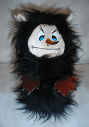

НОВОСТИ
Всеновости 03.12.10 Появился новый образ Хорплоши. За понравившийся Вам образ Вы можете проголосовать на странице " Поиск образа".Подробнее...
|
Знакомьтесь, Хорплоша!Здравствуйте, мои дорогие коллеги по счастью! Приветствую Вас, милые и заботливые родители! Я написала эту книжку для того, чтобы поделиться своим маленьким открытием, которое я совершенно случайно для себя сделала, и оно помогло мне вложить первые крупицы добра в воспитании своего ребенка Потому что только в наших руках возможность дать маленьким сокровищам истоки добра, и только мы ответственны за то, что этого не сделали. Давайте постараемся не упустить время, пока наши дети способны все «впитывать». Но делать мы это должны незаметно для ребенка и ненавязчиво. Персонаж, который я сегодня представляю для вас поможет сделать процесс нравственного воспитания непринужденным. Потом Вы сами заметите как ваш ребенок научится самостоятельно контролировать свои поступки и исправлять плохие с комментарием « Хорплоша, я не хочу тебя огорчать, поэтому я исправлюсь!»… Итак, теперь садитесь с ребенком (детьми) поудобнее и ПОЕХАЛИ в мир Хорплоши! Теперь, когда мы с Вами познакомились с Хорплошей, пришло время изготовить куклу - Хорплошу своими руками. Это также носит воспитательный характер. Работу можно начать с беседы. -Малыш, мы сейчас с тобой будем делать куклу - Хорплошу, своими руками. Ты вложишь в изготовление Хорплоши свои старания, и она будет слушаться только тебя, и ты увидишь сам, как твои поступки смогут ее сделать доброй или же испортить ей настроение. И ты поймешь, что каждый твой поступок очень и очень ЗНАЧИМ! Сделать куклу можно из картона, меха, ткани, ниток. Вообщем, на все ваша фантазия. Представляю фотографии разных Хорплош, изготовленных родителями. А теперь давайте приступим! Вместе с ребенком будем шить Хорплошу из меха. Для этого вам потребуется: Кусок меха темного цвета (размер 30х30см. лучше взъерошенного и лохматого), кусок меха светлого цвета (размер 30х30см), нитки, иголка, цветной картон, белая ткань, подкладочный материал, ножницы. Этапы выполнения работы: 1. Заранее вырезать из картона глаза, нос, и рот Хорплоши, на "хорошую" и на "плохую" стороны. ( как на фото) Выполняя это действие можно цитировать строчки из сказки: Пакетиками ушки смешно стоят торчком… Как ты думаешь малыш, зачем Хорплоше такие уши? Это для того, чтоб она все слышала : Какие слова говорят дети? Не кричат, не капризничают ли они?
Продолжаем беседу с ребенком по ходу выполнения работы. -Если Хорплоша слышит, что дети говорят вежливые слова, ведут себя тихо и спокойно, она будет становится вот такой, светлой , гладкой и аккуратной. И тоже будет делать хорошие поступки. 4. Выкроить из меха темного тона Плошу. -А если вдруг Хорплоша слышит, что дети говорят грубости и капризничают, она становится безобразной - взъерошеной и лохматой. 5. Сложить выкройки мехом друг к другу и сшить с изнаночной стороны, вшивая ушки-пакетики. 6. Вшить с изнаночной стороны овал для лица Хорплоши. 7. Наклеить элементы лица на добрую сторону Хорплоши. - Вот такие вот добрые глаза у Хорплоши, когда ее никто не огорчает поступками. 8. Наклеить элементы лица на злую сторону Хорплоши. - Вот такие косые глаза у Хорплоши, когда ее огорчают дети своим поведением. Теперь Хорплоша будет жить с нами в доме, и следить за твоим поведением. А ты не должен забывать о том, что твои поступки управляют поведением Хорплоши. У родителей часто возникает проблема, когда дети не слышат их с первого раза. Например: -Катя, сложи свои игрушки в коробку. -Катя, обрати внимание, почему Хорплоша стала грустной? Еще немного и она совсем огорчиться и будет делать нехорошие поступки. Может быть, ты что-то забыла сделать? А теперь Катя, давай поиграем. Я буду тебе говорить поступки, а ты поворачивай Хорплошу той стороной, какой она может стать, если совершать этот поступок. -Забывать поливать цветы? А теперь придумай сама, какие поступки и какаим образом могут изменить Хорплошу? Помни, малыш, что Хорплоша всегда подглядывает за тобой, и твои поступки могут сделать ее доброй или злой. И только твои поступки могут сделать наш мир теплым светлым и радостным, или наоборот – холодным, темным и страшным! Еще, дорогие родители, хочу вам предложить разнообразить привычную игру «Классики», и играя в нее не упускать возможность нравственного воспитания. Итак, чертим «Классики» традиционно, только на квадраты с цифрами кладем листы, на которых напечатаны качества. Например: 1.сострадание 2.безразличие, А там, где обычно пишется КОТЕЛ. Попадая на 1, читаем качество, придумываем поступок, который выполняем и закрываем лист, на котором написано плохое качество. Например, кормим с ребенком голубей хлебными крошками, и говорим о том, что это и есть сострадание. Берем лист и закрываем безразличие. Прыгаем классики. Пока плохой поступок не закрыт, на клетку прыгать нельзя. Вы можете делать такие поступки: Чистоплотность - проверяем, есть ли в кармане носовой платок, не успели ли замарать одежду. Ну вот мы и поиграли в « Хорплошины классики», совершили хорошие поступки, закрыли ими плохие, и посмотри, малыш, Хорплоша добрая и веселая, и тоже сейчас будет сеять крупицы добра кругом и всюду. А все потому, что мы своими хорошими поступками сделали ее ДОБРОЙ. Страниц: 1
|
Активных опросов на данный момент нет.

Поиск Подписка на новости 

|
 3. Выкроить из меха светлого тона Хорошу.
3. Выкроить из меха светлого тона Хорошу.
© 2006-2009